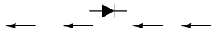
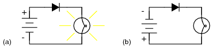
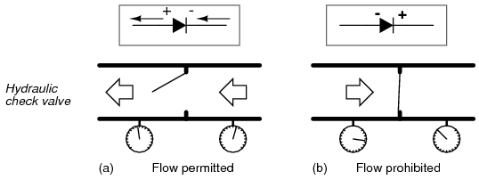
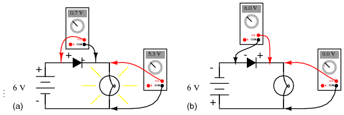
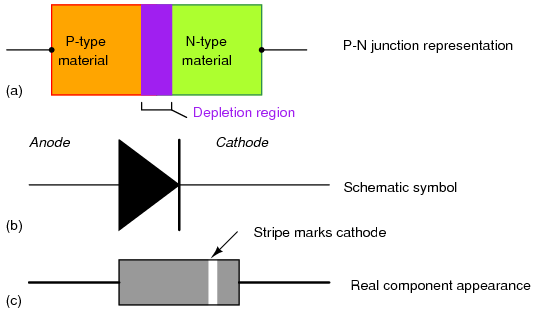
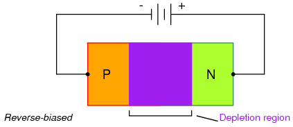
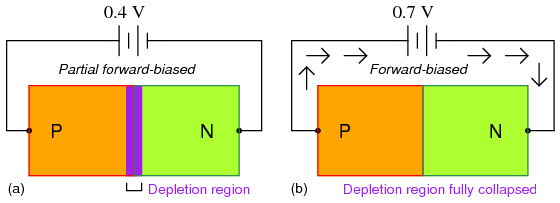

Diodos y Rectificadores
- Diodos Schottky
- Diodos de efecto túnel
- Diodos emisores de luz (LED)
- Diodos láser
- Fotodiodos
- Células fotovoltaicas
- Diodos varicap o varactor
- Diodo snap
- Diodos PIN
- Diodo IMPATT
- Diodo Gunn
- Diodo Shockley
- Diodos de corriente constante
Introducción
A diodoEs un dispositivo eléctrico que permite que la corriente circule a través de él en una dirección con mucha mayor facilidad que en la otra. El tipo de diodo más común en el diseño de circuitos modernos es elsemiconductordiodo, aunque existen otras tecnologías de diodos. Los diodos semiconductores están simbolizados en diagramas esquemáticos como la Figuraa continuación. El término "diodo" se reserva habitualmente para pequeños dispositivos de señal, I ≤ 1 A. El términorectificadorse utiliza para dispositivos de potencia, I > 1 A.
{kind=link}

Símbolo esquemático del diodo semiconductor: las flechas indican la dirección del flujo de corriente de electrones.
Cuando se coloca en un circuito simple de lámpara de batería, el diodo permitirá o evitará la corriente a través de la lámpara, dependiendo de la polaridad del voltaje aplicado. (Cifraa continuación)
{kind=link}

Operación de diodo: (a) Se permite el flujo de corriente; el diodo tiene polarización directa. (b) Se prohíbe el flujo de corriente; el diodo tiene polarización inversa.
Cuando la polaridad de la batería es tal que se permite que los electrones fluyan a través del diodo, se dice que el diodo estápolarizado hacia adelante. Por el contrario, cuando la batería está "al revés" y el diodo bloquea la corriente, se dice que el diodo estápolarizado inverso. Un diodo puede considerarse como un interruptor: “cerrado” cuando tiene polarización directa y “abierto” cuando tiene polarización inversa.
Por extraño que parezca, la dirección de los puntos de “punta de flecha” del símbolo del diodocontrala dirección del flujo de electrones. Esto se debe a que el símbolo del diodo fue inventado por ingenieros, que utilizan predominantementeflujo convencionalnotación en sus esquemas, que muestra la corriente como un flujo de carga desde el lado positivo (+) de la fuente de voltaje al negativo (-). Esta convención es válida para todos los símbolos de semiconductores que poseen "puntas de flecha": la flecha apunta en la dirección permitida del flujo convencional y en contra de la dirección permitida del flujo de electrones.
El comportamiento del diodo es análogo al comportamiento de un dispositivo hidráulico llamadocontrolador de el volumen. Una válvula de retención permite que el fluido fluya a través de ella en una sola dirección, como se muestra en la Figuraa continuación.
{kind=link}

Analogía de la válvula de retención hidráulica: (a) Se permite el flujo de corriente de electrones. (b) Prohibido el flujo de corriente.
Las válvulas de retención son esencialmente dispositivos operados por presión: se abren y permiten el flujo si la presión a través de ellas tiene la "polaridad" correcta para abrir la compuerta (en la analogía que se muestra, mayor presión de fluido a la derecha que a la izquierda). Si la presión es de “polaridad” opuesta, la diferencia de presión a través de la válvula de retención cerrará y mantendrá la compuerta de modo que no se produzca flujo.
Al igual que las válvulas de retención, los diodos son esencialmente dispositivos operados por “presión” (operados por voltaje). La diferencia esencial entre polarización directa y polarización inversa es la polaridad del voltaje que cae a través del diodo. Echemos un vistazo más de cerca al circuito simple de batería, diodo y lámpara que se mostró anteriormente, esta vez investigando las caídas de voltaje en los distintos componentes de la Figura.a continuación.
{kind=link}

Mediciones de tensión del circuito de diodos: (a) Polarización directa. (b) Sesgo inverso.
Un diodo con polarización directa conduce corriente y deja caer un pequeño voltaje a través de él, dejando que la mayor parte del voltaje de la batería caiga a través de la lámpara. Si se invierte la polaridad de la batería, el diodo se polariza en forma inversa y caealldel voltaje de la batería sin dejar nada para la lámpara. Si consideramos que el diodo es un interruptor automático (cerrado en el modo de polarización directa y abierto en el modo de polarización inversa), este comportamiento tiene sentido. La diferencia más sustancial es que el diodo cae mucho más voltaje cuando conduce que el interruptor mecánico promedio (0,7 voltios frente a decenas de milivoltios).
Esta caída de voltaje de polarización directa exhibida por el diodo se debe a la acción de la región de agotamiento formada por la unión P-N bajo la influencia de un voltaje aplicado. Si no se aplica voltaje a través de un diodo semiconductor, existe una delgada región de agotamiento alrededor de la región de la unión P-N, lo que impide el flujo de corriente. (Cifraa continuación(a)) La región de agotamiento está casi desprovista de portadores de carga disponibles y actúa como aislante:
{kind=link}

Representaciones de diodos: modelo de unión PN, símbolo esquemático, parte física.
El símbolo esquemático del diodo se muestra en la figura.anterior(b) de manera que el ánodo (extremo que apunta) corresponda al semiconductor tipo P en (a). La barra catódica, extremo no puntiagudo, en (b) corresponde al material tipo N en (a). Tenga en cuenta también que la franja del cátodo en la parte física (c) corresponde al cátodo en el símbolo.
Si se aplica un voltaje de polarización inversa a través de la unión P-N, esta región de agotamiento se expande, resistiendo aún más cualquier corriente a través de ella. (Cifraa continuación)
{kind=link}

La región de agotamiento se expande con un sesgo inverso.
Por el contrario, si se aplica un voltaje de polarización directa a través de la unión P-N, la región de agotamiento colapsa y se vuelve más delgada. El diodo se vuelve menos resistente a la corriente que lo atraviesa. Para que una corriente sostenida pase por el diodo; sin embargo, la región de agotamiento debe colapsarse completamente por el voltaje aplicado. Esto requiere un cierto voltaje mínimo para lograrlo, llamadotensión directacomo se ilustra en la figuraa continuación.
{kind=link}

El aumento del sesgo directo de (a) a (b) disminuye el espesor de la región de agotamiento.
Para los diodos de silicio, el voltaje directo típico es de 0,7 voltios nominales. Para los diodos de germanio, el voltaje directo es de sólo 0,3 voltios. La constituyente química de la unión P-N que comprende el diodo explica su cifra de voltaje directo nominal, razón por la cual los diodos de silicio y germanio tienen voltajes directos tan diferentes. La caída de voltaje directo permanece aproximadamente constante para una amplia gama de corrientes de diodo, lo que significa que la caída de voltaje del diodo no es como la de una resistencia o incluso la de un interruptor normal (cerrado). Para el análisis de circuito más simplificado, la caída de voltaje a través de un diodo conductor puede considerarse constante en la cifra nominal y no relacionada con la cantidad de corriente.